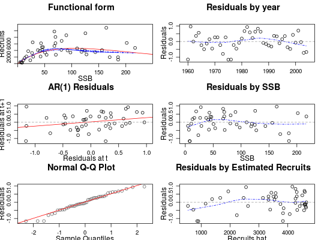

Class FLSR
Usage
FLSR(model, ...)
Description
Class for stock-recruitment models.
Details
A series of commonly-used stock-recruitment models are already available,
including the corresponding likelihood functions and calculation of initial
values. See SRModels for more details and the exact
formulation implemented for each of them.
Slots
- name
- Name of the object (
character). - desc
- Description of the object (
character). - range
- Range (
numeric). - rec
- Recruitment series (
FLQuant). - ssb
- Index of reproductive potential, e.g. SSB or egg oor egg production (
FLQuant). - fitted
- Estimated values for rec (
FLQuant). - residuals
- Residuals obtained from the model fit (
FLArray). - covar
- Covariates for SR model (
FLQuants). - model
- Model formula (
formula). - gr
- Function returning the gradient of the likelihood (
function). - logl
- Log-likelihood function (
function). - initial
- Function returning initial parameter values for the optimizer (
function). - params
- Estimated parameter values (
FLPar). - logLik
- Value of the log-likelihood (
logLik). - vcov
- Variance-covariance matrix (
array). - details
- Extra information on the model fit procedure (
list). - logerror
- Is the error on a log scale (
logical). - distribution
- (
factor). - hessian
- Resulting Hessian matrix from the fit (
array).
Examples
# Create an empty FLSR object. sr1 <- FLSR() # Create an FLSR object using the existing SR models. sr2 <- FLSR(model = 'ricker') sr2@modelrec ~ a * ssb * exp(-b * ssb) <environment: 0xa1fa620>sr2@initialfunction(rec, ssb) { # The function to provide initial values res <-coefficients(lm(log(c(rec)/c(ssb))~c(ssb))) return(FLPar(a=max(exp(res[1])), b=-max(res[2])))} <environment: 0xa1fa620> attr(,"lower") [1] -Inf -Inf attr(,"upper") [1] Inf Infsr2@loglfunction(a, b, rec, ssb) loglAR1(log(rec), log(a*ssb*exp(-b*ssb))) <environment: 0xa1fa620>rec ~ a * ssb/(b + ssb) <environment: 0x9cc8388>sr3@initialfunction(rec, ssb) { a <- max(quantile(c(rec), 0.75, na.rm = TRUE)) b <- max(quantile(c(rec)/c(ssb), 0.9, na.rm = TRUE)) return(FLPar(a = a, b = a/b))} <environment: 0x9cc8388> attr(,"lower") [1] -Inf -Inf attr(,"upper") [1] Inf Infsr3@loglfunction(a, b, rec, ssb) loglAR1(log(rec), log(a*ssb/(b+ssb))) <environment: 0x9cc8388># Create an FLSR using a function. mysr1 <- function(){ model <- rec ~ a*ssb^b return(list(model = model))} sr4 <- FLSR(model = mysr1) # Create an FLSR using a function and check that it works. mysr2 <- function(){ formula <- rec ~ a+ssb*b logl <- function(a, b, sigma, rec, ssb) sum(dnorm(rec, a + ssb*b, sqrt(sigma), TRUE)) initial <- structure(function(rec, ssb) { a <- mean(rec) b <- 1 sigma <- sqrt(var(rec)) return(list(a=a, b=b, sigma=sigma))}, lower = c(0, 1e-04, 1e-04), upper = rep(Inf, 3)) return(list(model = formula, initial = initial, logl = logl)) } ssb <- FLQuant(runif(10, 10000, 100000)) rec <- 10000 + 2*ssb + rnorm(10,0,1) sr5 <- FLSR(model = mysr2, ssb = ssb, rec = rec) sr5.mle <- fmle(sr5)Warning message: NAs introduced by coercion Warning message: NAs introduced by coercionNelder-Mead direct search function minimizer function value for initial parameters = 393630.401798 Scaled convergence tolerance is 0.00586555 Stepsize computed as 12106.458685 BUILD 4 57690516860287.562500 310129.738058 LO-REDUCTION 6 12705982807000.550781 310129.738058 HI-REDUCTION 8 3239727198324.727539 310129.738058 HI-REDUCTION 10 817750527737.021118 310129.738058 HI-REDUCTION 12 205265850254.703064 310129.738058 HI-REDUCTION 14 51338640090.392960 310129.738058 HI-REDUCTION 16 12796450411.335768 310129.738058 HI-REDUCTION 18 3173951749.616407 310129.738058 HI-REDUCTION 20 780282834.693156 310129.738058 HI-REDUCTION 22 188524040.817379 310129.738058 HI-REDUCTION 24 43998732.366860 310129.738058 HI-REDUCTION 26 9585253.260348 310129.738058 HI-REDUCTION 28 1842139.513082 310129.738058 HI-REDUCTION 30 559482.174780 310129.738058 REFLECTION 32 393630.401798 167513.875919 LO-REDUCTION 34 336655.619348 167513.875919 LO-REDUCTION 36 310129.738058 129267.464576 HI-REDUCTION 38 214597.819569 129267.464576 HI-REDUCTION 40 167513.875919 129267.464576 HI-REDUCTION 42 149741.520401 127450.662614 LO-REDUCTION 44 142848.403773 126177.484754 REFLECTION 46 129267.464576 115062.619405 HI-REDUCTION 48 127450.662614 114980.936806 REFLECTION 50 126177.484754 112508.004403 HI-REDUCTION 52 115062.619405 110421.784011 REFLECTION 54 114980.936806 109997.916370 EXTENSION 56 112508.004403 98072.820621 HI-REDUCTION 58 110421.784011 98072.820621 LO-REDUCTION 60 109997.916370 98072.820621 EXTENSION 62 106181.748218 87422.865784 EXTENSION 64 99397.359215 73554.132197 EXTENSION 66 98072.820621 61107.152309 EXTENSION 68 87422.865784 44682.528048 EXTENSION 70 73554.132197 25217.863534 EXTENSION 72 61107.152309 7457.689794 EXTENSION 74 44682.528048 3802.292693 REFLECTION 76 25217.863534 982.714422 LO-REDUCTION 78 7457.689794 982.714422 HI-REDUCTION 80 3802.292693 982.714422 LO-REDUCTION 82 2851.080741 305.644466 HI-REDUCTION 84 1524.218783 305.644466 HI-REDUCTION 86 982.714422 192.101555 HI-REDUCTION 88 712.951133 192.101555 HI-REDUCTION 90 306.924387 192.101555 LO-REDUCTION 92 305.644466 141.645497 HI-REDUCTION 94 254.795801 118.087615 LO-REDUCTION 96 192.101555 104.883238 LO-REDUCTION 98 141.645497 102.291280 LO-REDUCTION 100 118.087615 82.270179 LO-REDUCTION 102 104.883238 75.331313 HI-REDUCTION 104 102.291280 75.003137 LO-REDUCTION 106 82.270179 75.003137 HI-REDUCTION 108 75.331313 69.558351 REFLECTION 110 75.144513 69.221845 LO-REDUCTION 112 75.003137 69.221845 HI-REDUCTION 114 70.345781 69.221845 HI-REDUCTION 116 70.141037 69.221845 LO-REDUCTION 118 69.558351 69.049447 HI-REDUCTION 120 69.307705 69.031079 HI-REDUCTION 122 69.221845 68.978592 LO-REDUCTION 124 69.049447 68.978592 HI-REDUCTION 126 69.031079 68.946682 LO-REDUCTION 128 69.004155 68.946682 HI-REDUCTION 130 68.978592 68.946682 REFLECTION 132 68.964700 68.945345 HI-REDUCTION 134 68.959159 68.943842 Exiting from Nelder Mead minimizer 136 function evaluations usedsr5.nls <- nls(sr5) # NS Herring stock-recruitment dataset data(nsher) # already fitted with a Ricker SR model summary(nsher)An object of class "FLSR" Name: Description: Range: min minyear max maxyear 0 1960 0 2004 Quant: age rec : [ 1 45 1 1 1 1 ], units = 10^3 ssb : [ 1 45 1 1 1 1 ], units = t*10^3 residuals : [ 1 45 1 1 1 1 ], units = NA fitted : [ 1 45 1 1 1 1 ], units = 10^3 Model: rec ~ a * ssb * exp(-b * ssb) <environment: 0xc0475a8> Parameters: params iter a b 1 119.4 0.009451 Log-likelihood: 15.862(0) Variance-covariance: a b a 255.3388181 1.808870e-02 b 0.0180887 1.992659e-06
# change model model(nsher) <- bevholt() # fit through MLE nsher <- fmle(nsher)Nelder-Mead direct search function minimizer function value for initial parameters = -10.336211 Scaled convergence tolerance is 1.54022e-07 Stepsize computed as 501.110000 BUILD 3 44.842344 -11.603908Warning message: NaNs producedHI-REDUCTION 5 31.685209 -11.603908Warning message: NaNs producedHI-REDUCTION 7 17.913114 -11.603908Warning message: NaNs producedHI-REDUCTION 9 5.415279 -11.603908Warning message: NaNs producedHI-REDUCTION 11 -3.412974 -11.603908 HI-REDUCTION 13 -8.018030 -11.603908 LO-REDUCTION 15 -10.336211 -11.603908 LO-REDUCTION 17 -11.081040 -11.603908 EXTENSION 19 -11.295930 -12.061705 LO-REDUCTION 21 -11.603908 -12.061705 REFLECTION 23 -11.813826 -12.087620 REFLECTION 25 -12.061705 -12.199591 LO-REDUCTION 27 -12.087620 -12.199591 LO-REDUCTION 29 -12.158184 -12.199591 LO-REDUCTION 31 -12.191726 -12.199591 HI-REDUCTION 33 -12.192269 -12.199591 HI-REDUCTION 35 -12.197784 -12.199591 LO-REDUCTION 37 -12.198015 -12.199591 HI-REDUCTION 39 -12.199555 -12.199776 REFLECTION 41 -12.199591 -12.200058 HI-REDUCTION 43 -12.199776 -12.200092 HI-REDUCTION 45 -12.200058 -12.200142 HI-REDUCTION 47 -12.200092 -12.200155 HI-REDUCTION 49 -12.200142 -12.200160 HI-REDUCTION 51 -12.200155 -12.200177 HI-REDUCTION 53 -12.200160 -12.200177 LO-REDUCTION 55 -12.200171 -12.200179 HI-REDUCTION 57 -12.200177 -12.200179 HI-REDUCTION 59 -12.200178 -12.200179 HI-REDUCTION 61 -12.200179 -12.200179 HI-REDUCTION 63 -12.200179 -12.200179 HI-REDUCTION 65 -12.200179 -12.200179 Exiting from Nelder Mead minimizer 67 function evaluations used